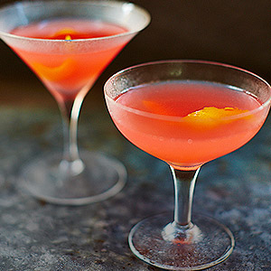
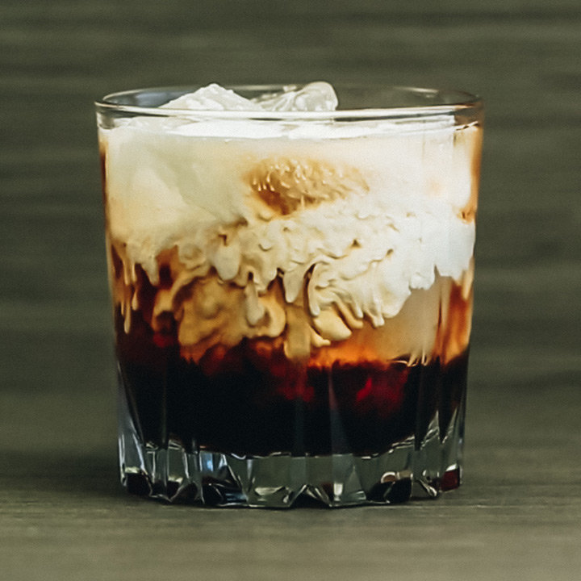
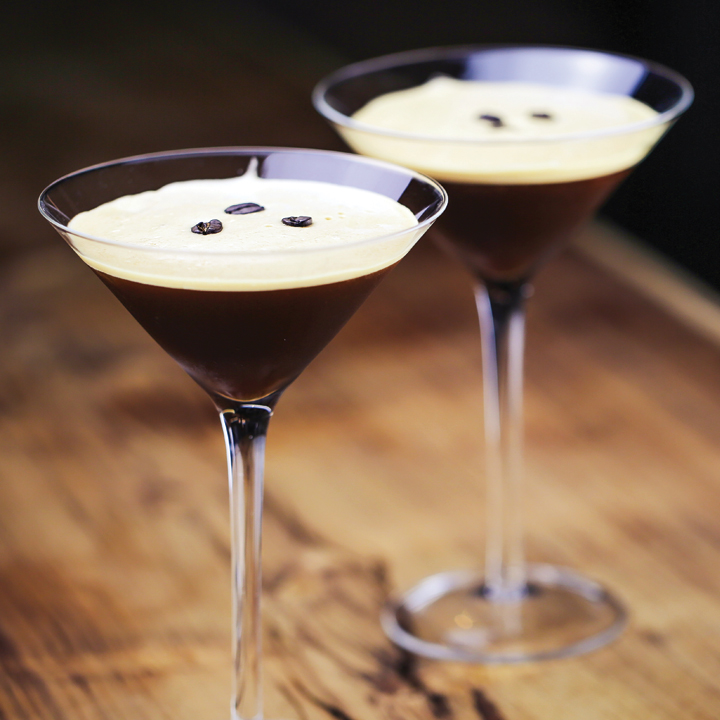
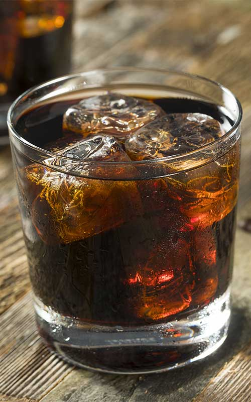
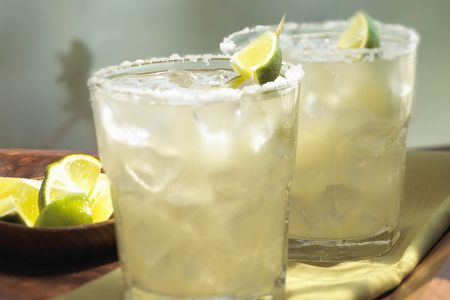
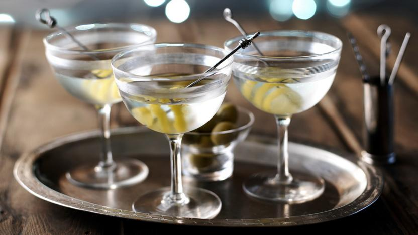
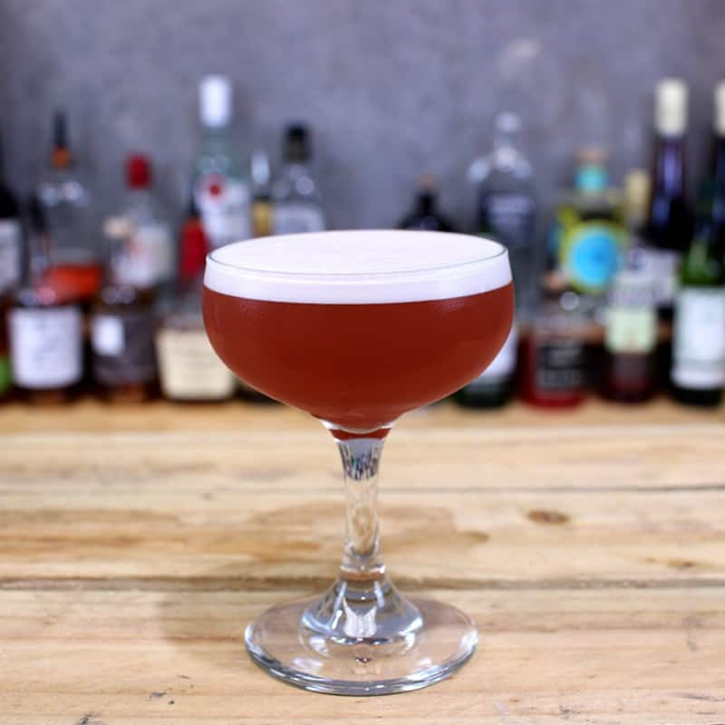
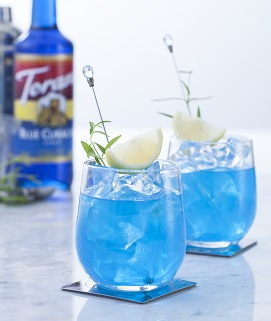

Vodka
Sex on The Beach

Ingredients
- 50ml vodka ( try with White Rum!)
- 100ml orange juice
- 100ml cranberry juice
- 25ml peach Schnapps
- 1 tsp vanilla extract
- Ice
Method
- Fill 2 highball glasses with ice cubes 3/4 of the way up.
- Divide the vodka or rum between the two glasses, top with the cranberry, orange juice and a splash of the peach snaps on top.
- Add 1/4 teaspoon vanilla extract as a float to each glass and enjoy!
Bloody Mary

Ingredients
- 50 ml Vodka (2 shots)
- 120 ml tomato juice
- Glug of Worcestershire sauce (to taste)
- Squeeze of fresh lemon juice
- 2 dashes Tabasco/other hot sauce (to taste)
- A crack of black pepper
- 1 pinch Salt
- Celery stick (for garnish)
- Lemon wedge (for garnish)
Method
- Add all the ingredients into a mixing glass and stir.
- Pour into a chilled highball glass over ice.
- Garnish with a celery stick and lemon wedge.
Where to get one
Try 69 Colebrooke Row (Islington) for a wacky twist on the typical Bloody Mary, or The Sun Tavern (Bethnal Green) for a pint-sized!
Cosmopolitan

Ingredients
- 60ml Vodka (also try with Tequila!)
- 20ml Cointreau liqueur
- 30ml parts cranberry juice
- A tsp of fresh lime juice
- Ice cubes
- Orange zest (garnish)
Equipment
- Shaker or stirring glass
- Bar spoon (or teaspoon)
- Strainer
- A match
- Martini glass
Method
- Chill your cocktail glass (the easiest way is to fill it with ice)
- Put plenty of ice and all of the ingredients into your shaker or stirring glass and shake or stir vigorously for about 20 seconds
- Strain the mix into a cocktail glass
- Cut a piece of orange peel about the size of your thumb (be careful not to bend it). Hold the piece of orange peel between finger and thumb over the glass, and use a match to gently warm it for about 20 seconds
- Then bend the peel so it releases oil onto the lighted match, igniting a flame that will settle on the surface of the drink
Where to get one
https://foursquare.com/top-places/london/best-places-cosmopolitans
White Russian

Ingredients
- 60ml Vodka
- 2 tbsp Kahlúa
- 1 tbsp single cream/full-fat milk
- Ice
Equipment
- Stirring glass
Method
- Mix together all the ingredients in a stirring glass.
- Put some ice cubes in a small tumbler and pour the cocktail over the top.
- Put up your feet, drink, channel your inner Dude.
Where to get one
https://foursquare.com/top-places/london/best-places-white-russians
Espresso Martini

Ingredients
- 50ml vodka
- 25l freshly brewed espresso coffee
- 25ml Kahlúa
- Coffee beans (for garnish - optional)
- Ice
Equipment
- Martini glasses
- Cocktail shaker
Method
- Put 2 martini glasses in the fridge to chill.
- Fill a cocktail shaker with a handful of ice, the vodka, espresso and coffee liqueur. Shake until the outside of the cocktail shaker feels icy cold.
- Strain into the chilled glasses. Garnish each one with coffee beans if you like.
Where to get one
https://www.telegraph.co.uk/food-and-drink/features/find-best-espresso-martinis-london/
Black Russian

Ingredients
- 50ml vodka (also try with Tequila!)
- 25ml Kahlúa
- Ice
- 1 maraschino cherry
- cola to top up
Method
- Put the vodka and the coffee liqueur into a tumbler filled with ice and stir gently for 30 secs - 1min.
- Add the cherry and serve.
- Top with a splash of chilled cola if you prefer a longer drink.
Moscow Mule

Ingredients
- 50ml Vodka
- ½ tbsp fresh lime juice
- 100 ml ginger beer
- Lime wedge (for garnish)
- Ice
Equipment
- Copper mug
- Spoon
Method
- Fill a copper mug or similarly sized glass with ice.
- Pour in the vodka and lime juice. Fill the glass with ginger beer and gently swirl it with a spoon until mixed.
- Garnish with a lime wedge, and enjoy!
Where to get one
https://foursquare.com/top-places/london/best-places-moscow-mule
Salty Dog

Ingredients
- 50 ml Vodka (also try with Gin!)
- 50-100ml grapefruit juice (to taste)
- Salt (for rim of glass)
- Lime wedge
- Fruit bitters (an optional kick)
- Ice
Method
- Rim a chilled collins glass with salt.
- Fill the glass with ice, add the vodka and juice.
- Stir well.
- Garnish with a lemon or lime wedge.
Vodka Martini

Ingredients
- 15ml Dry Vermouth
- 60ml Vodka
- Dash of orange bitters (optional)
- Twist lemon peel or green olives (for garnish) - it’s up to you!
- /Ice
Equipment
- Martini glass
- Cocktail shaker
- Spoon
- Cocktail stick
Method
- Chill the cocktail glass (the easiest way is to fill it with ice)
- Add plenty of ice and the vermouth to the cocktail shaker and stir
- Add vodka to the shaker and stir for about 30 seconds
- Garnish the drink with a twist of lemon peel. To make the lemon twist, cut a long piece of zest (around 8 to 10cm), then tightly wind the zest around a straw or the handle of a teaspoon. Remove your straw or spoon and you’ll be left with a spiral.
- Rest your spiral on the rim of the glass and serve
- For an olive garnish, poke the olives onto the cocktail stick and rest in glass
Where to get one
For the authentic, James Bond experience, Dukes Bar (Mayfair) is a must! For a less pricey alternative, try The Seven Stars pub (Holborn)
French Martini

Ingredients
- 50ml Vodka
- 25ml Creme de Cassis
- 15ml Vermouth
- 25ml Pineapple Juice
- Ice
Equipment
- Martini glass
- Cocktail shaker
Method
- Chill Martini glass
- Add all ingredients to cocktail shaker with 3-4 cubes of ice.
- Shake well for 30 seconds.
- Strain mixture into the Martini glass and serve!
Where to get one
Blue Lagoon (also try with Tequila!)

Ingredients
- 50ml Vodka
- 25ml Blue Curaçao Liqueur
- 150ml Lemonade
- Slice Lemon
- Ice
Equipment
- Highball glass
- Stirrer/spoon
Method
- Fill the glass with ice.
- Add Vodka and lemonade, and stir until mixed.
- Pour Blue Curaçao Liqueur over the top of the mixture
- Garnish with lemon